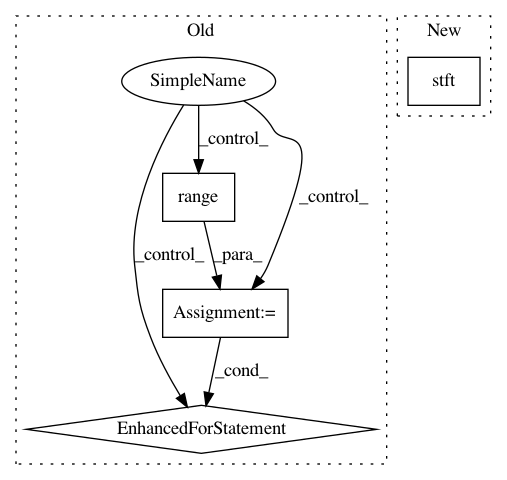

ceb4e40c074d2f0d0bde8e97c7b4493971281a9b,nussl/core/augmentation.py,,time_stretch,#Any#Any#,80
Before Change
stretched_source = []
audio_data = signal.audio_data
for row in range(audio_data.shape[0]):
audio_row = audio_data[row, :]
if librosa.__version__ > "0.6.2":
audio_row = np.asfortranarray(audio_row)
stretched_source.append(librosa.effects.time_stretch(audio_row, stretch_factor))
stretched_signal = AudioSignal(audio_data_array=np.array(stretched_source), sample_rate=sample_rate)
return stretched_signal
After Change
stretched_audio_data.append(librosa.effects.time_stretch(audio_row, stretch_factor))
stretched_audio_data = np.array(stretched_audio_data)
stretched_signal = audio_signal.make_copy_with_audio_data(stretched_audio_data)
stretched_signal.stft()
return stretched_signal
def pitch_shift(audio_signal, shift):
In pattern: SUPERPATTERN
Frequency: 3
Non-data size: 4
Instances
Project Name: interactiveaudiolab/nussl
Commit Name: ceb4e40c074d2f0d0bde8e97c7b4493971281a9b
Time: 2020-05-14
Author: abugler@gmail.com
File Name: nussl/core/augmentation.py
Class Name:
Method Name: time_stretch
Project Name: interactiveaudiolab/nussl
Commit Name: 889a295c5c4e0c1cf344e49f2020917a410f64d1
Time: 2020-05-03
Author: abugler@gmail.com
File Name: nussl/core/augmentation.py
Class Name:
Method Name: time_stretch
Project Name: keunwoochoi/kapre
Commit Name: 8cdbb1637b140c01f431831e7b2c2a63afc96209
Time: 2020-08-14
Author: gnuchoi+github@gmail.com
File Name: kapre/time_frequency.py
Class Name: Spectrogram
Method Name: call